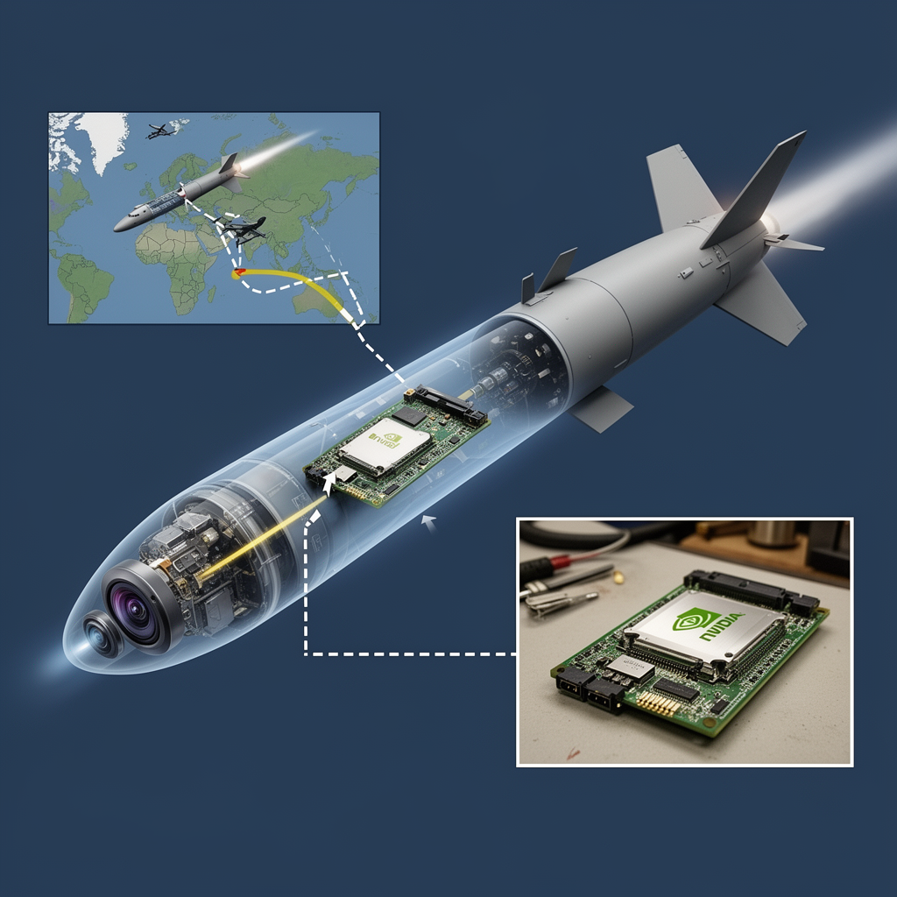

AI Panorama · fly through the Qwen 3.8 Max edition
This page was written entirely by Qwen 3.8 Max (Alibaba), as one of the magazine's editions - eight AI models each wrote their own version of every story from the same frozen sources.
The same story in other editions: GPT-5.6 Terra Claude Sonnet 5 Gemini 3.7 Flash Grok 4.6 DeepSeek V4 Pro GLM 5.3 Kimi K2.6
Ukraine's military intelligence says an Nvidia Jetson Orin computer was found in Russia's S-71 cruise missile.

Ukraine's military intelligence says it has found an Nvidia Jetson Orin computer module inside Russia's new S-71 Monochrome air-launched cruise missile. The Main Directorate of Intelligence, known as HUR, announced the discovery on August 12, publishing it on its War&Sanctions portal alongside 35 other foreign electronic components identified in Russian weapons.
The finding does not prove how the missile uses the hardware. HUR said the chip's presence could indicate that Russia is relying on artificial intelligence technology in the weapon, but it did not disclose precisely what functions the Nvidia hardware performs during missile operations.
## What was found
Several Ukrainian outlets describe the component as belonging to Nvidia's Jetson Orin family, a line of compact computers designed to run AI tasks directly on the device rather than in a cloud data centre. Tom's Hardware reports that the module carried markings suggesting it resembles the Jetson Orin NX 8GB/16GB system-on-module. According to that report, the unit had packaging marks indicating March 2025.
The S-71 Monochrome itself is a new cruise missile adapted to be carried inside the internal weapons bays of Russia's Su-57 fighter jet and the S-70 Okhotnik drone. Militarnyi describes it as having reduced observability and a claimed autonomous target-search capability. If the S-71M variant shares the S-71K Kovyor's specifications, Militarnyi says its range is up to 300 km and its warhead is a 250 kg high-explosive fragmentation aerial bomb. United24 gives different figures: a 250 kg warhead, a speed of about 500 to 600 km per hour, and a range of 350 to 400 km.
## What the chip might do
Tom's Hardware suggests one possible use: the Jetson could act as the computing engine behind an electro-optical perception system that recognises images in real time and helps with terminal guidance, the final stage of flight when the missile homes in on its target. That publication notes that a Chinese-made Honpho TS130C-01 camera module was also identified among the components HUR examined. United24 goes further, citing the Ukrainian military channel Polkovnik Gsh to say that the Nvidia module works with an onboard camera to provide terminal guidance using machine-vision algorithms.
Those are claims of different confidence levels. HUR itself stopped at saying the hardware may indicate AI use without assigning it a specific role. Nvidia told Tom's Hardware that Jetson Orin modules are consumer-grade products sold to students, developers and startups, are not officially available in Russia, and are not designed for military purposes. The company said pre-owned Jetsons circulate through reseller channels and that it would take action if it determined a customer was violating U.S. export controls.
## Why it matters
The discovery fits a broader pattern that Ukrainian investigators have been documenting. HUR says its research has identified 5,816 foreign-made components across 202 Russian weapons systems as of August 2026. The same release covering the S-71 included components of a passive radar seeker that Russia has begun installing on Geran-2 drones, apparently so they can find and strike Ukrainian air-defence systems and radar stations, as well as components from the active seeker of the Kh-47M2 Kinzhal aeroballistic missile.
The larger conclusion HUR draws is that Russia still cannot fully replace foreign high-tech electronics with domestic alternatives, despite years of sanctions and attempts to build alternative supply chains. The Jetson case also highlights a gap in export controls: while the U.S. government restricts high-end AI accelerators used to train models, Tom's Hardware notes that hardware which can run such models locally is not export-controlled in the same way and remains widely available.
In one contrast within the same set of findings, HUR's analysis of Russia's Oreshnik ballistic missile found that all identified components in that weapon were manufactured in Russia and Belarus. The S-71 tells the opposite story: a stealthy new missile with a foreign computer at its core.
Edge AIComputer visionTerminal guidance
ai-in-weaponsexport-controlsrussia-ukraine-warsanctionscomputer-vision